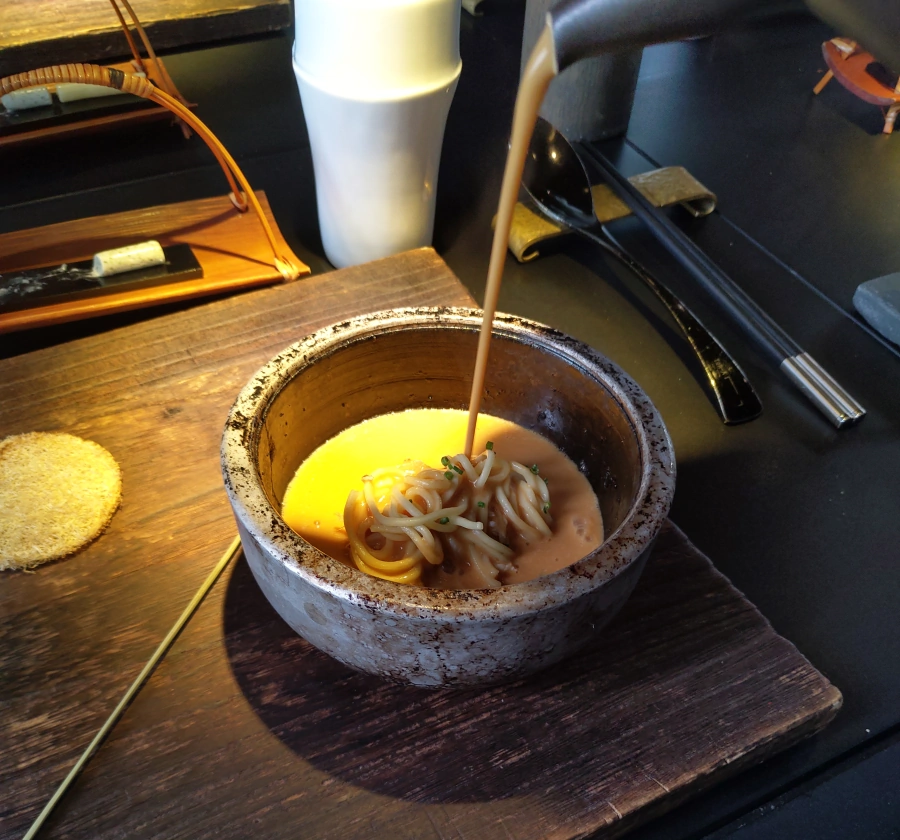

[台北] Toh-A’桌藏
| 餐廳名稱: | Toh-A’桌藏 |
|---|---|
| 地 址: | 台北市大安區和平東路二段96巷14號隔壁 |
| 營業時間: | 週一至週日 12:00-14:30 18:00-22:00 |
| 電 話: | 02 2377 0952 |
慶祝長輩生日，選了一間高級餐廳。老闆兼主廚是很出名的 布秋榮先生，香港人，但來台灣20多年，落地生根了， 業界通常叫他 阿布。之前在許多高級餐廳歷練過，這間是自己當家作主了。 一定要預約，女王大人四天前訂不到，先排候補，所幸在前一天通知說有位子了。
附近有幾個私人停車場，附近的和平東路二段76巷，龍門國中圍牆邊，有幾個公有路邊停車格。當然龍門國中本身有地下停車場，只是比那幾個停車格又更遠了。
這個圓形正門口，中午準時12點打開，並不會先放客人進去等。不過附近有小公園，早到一點也不至於太無聊。
進入圓形大門後，直走到底右轉，就進入餐廳了。這是日式老房子改建的，還有老樹。
只有六張大鐵桌，每張最多坐8位。如果一組客人不到八位，沒坐人的那一格就會變成裝飾格，有一層薄薄的石頭，上面擺一些裝飾品。 如果人數太少而併桌，也會用下圖最右邊那個高聳裝飾品當隔間板。
下圖是櫃台，櫃台右方的門進去就是廚房，服務人員進進出出，忙裡忙外。
這是中午的菜單，晚上的菜單是另外一套菜色，價格高出很多。
在等待的同時，麵包先上，每個人都有一籃麵包，而且吃完還能再續麵包。小竹籃上面是奶油，今天是原味奶油與海苔奶油，也是每人一份。 右下黑色小茶杯是迎賓茶，就這個時間喝一下，今天這個飲料是芭樂葉茶。三樣東西都有基本水準，還行。
冷前菜，我選的是不在標準菜單上的 鮑魚、朝鮮薊、無花果。下圖中跟鮑魚、無花果差不多大小的 褐色塊，就是炸過的切塊朝鮮薊。 吃到的時候略疑惑，趁空檔問一下服務生，才記起來上菜時其實講過了。
女王的冷前菜，她選了菜單上的，不過今天是 芋頭糕微烤法國鵝肝醬。兩種前菜都好吃。
當令開胃菜，也算是熱前菜，這道大家都一樣，上面黑色那片是西米露做出來的，底下是干貝、蝦子，加上那個濃郁醬汁，還是好吃。
干邑龍蝦海鮮湯佐擔仔麵，似乎是招牌，開店以來在菜單中屹立不搖。熱湯在左上角的壺中，端到客人桌上才開始組合。
這裡是高級餐廳，可以看到右邊餐具換成湯匙、筷子，其實幾乎每道菜都換餐具。
服務人員組合中。底下有一塊龍蝦肉，猜測湯頭是大量龍蝦頭去熬的，很濃郁，濃郁到有很輕微的苦味。用筷子把麵攪散，均勻地泡在湯裡，蠻有特色的一道菜，好吃。 
日本瑤柱，金華火腿，雞煲湯。這算是清湯，而龍蝦湯是濃湯。這道不是女王點的，我就不好意思要一點來喝了，只有照相。
和牛臉頰肉。
當日鮮魚，今天是龍膽石斑。
主廚精選牛排。
澳洲羊肩排。只有這是我點的，前面的排餐，大多有分享到一口，我的羊肩排當然也有分享一些出去。 老實講，好吃但印象不深，每種食材應該都已經是高級貨，再烹煮到很柔軟，醬汁的調味也適中，除了份量少，烹調手法沒啥好抱怨的。
飯後甜點 與 飯後飲料。甜點是自製的冰淇淋，深褐色是巧克力餅乾沒錯，可是淺褐色竟然是 豆腐乳製成的餅乾，但其實甜味還是一半以上，變成鹹甜鹹甜的口味，挺特殊的。 飲料有幾種咖啡、幾種茶可以選，還有洋甘菊這種無咖啡因的也有提供。我今天挑了 東方美人茶，喝起來感覺也是等級不錯的東方美人茶。
不愧是已經成名的高級餐廳，食物、服務水準、裝潢都屬一流。每道菜都精緻好吃，不過感覺菜單變化不太大，久久來吃一次就可以了。 光是很多人來一次，就夠他生意興隆了。